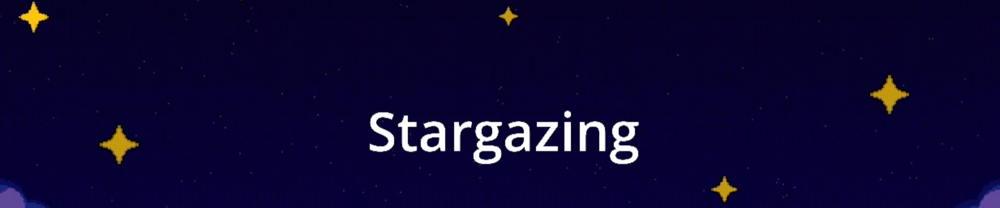
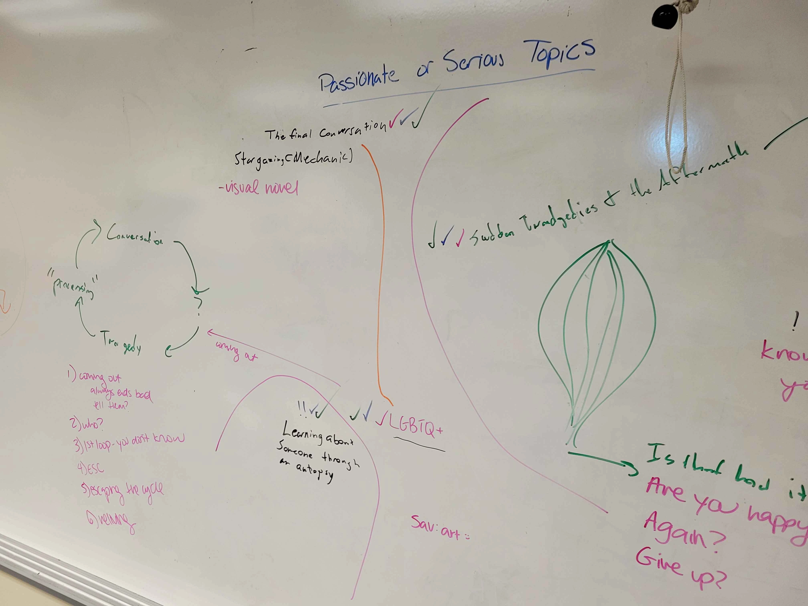
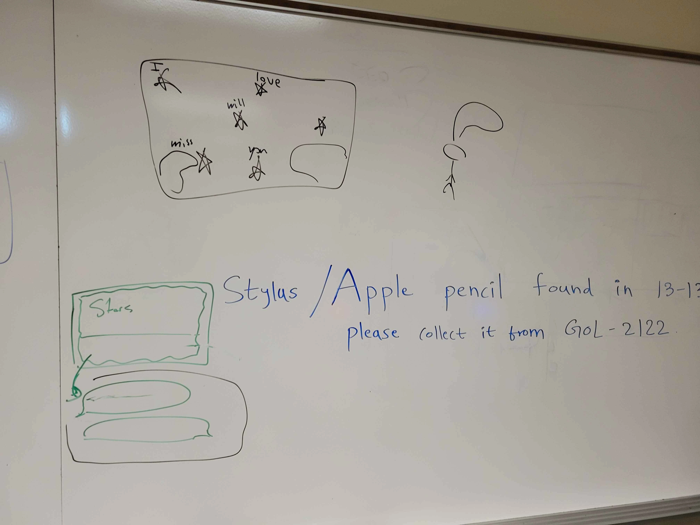
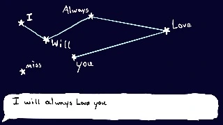
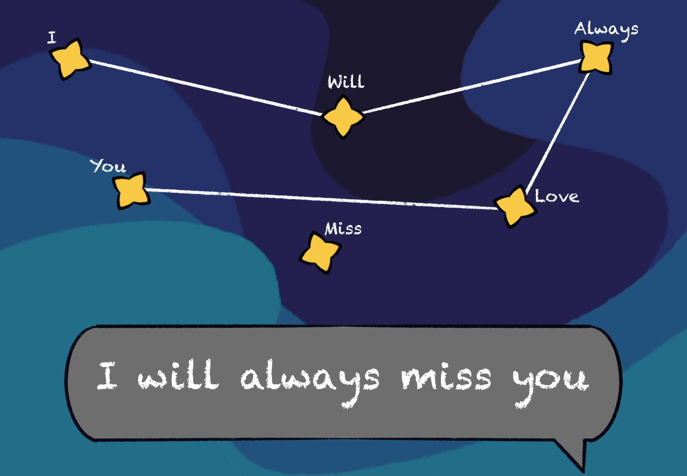
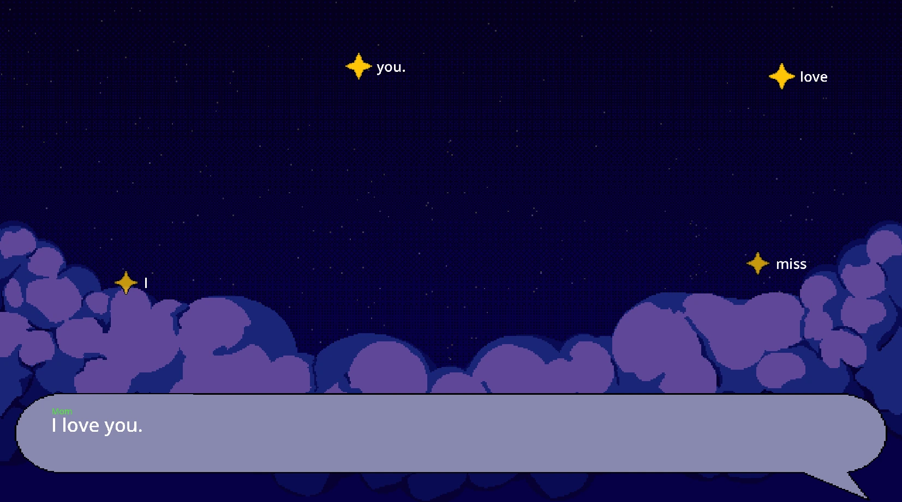

Stargazing
2-D narrative game about coming out.
Godot
C#
GDScript
Role:
Designer
Team Size:
5 people
Duration:
3 weeks
Connect stars in the night sky to form your response. Choose your words carefully, as each constellation will change the course of the conversation. If it doesn't go the way you hoped, you can try again. And again. And again. Will different words lead to a different ending? Or are some outcomes written in the stars?
Responsibilities
Designer
- Created initial game concept and thematic direction.
- Helped define the emotional arc and pacing of the narrative.
- Assisted in shaping the cultural details of the game's protagonist.
- Co-wrote and structured the full dialogue system, including branching arguments.
- Designed dialogue flows using Lucidchart node mapping to visualize emotional pacing.
- Transferred and structured dialogue in Yarnspinner, organizing flags, paths, and state logic.
- Implemented dialogue scenes in Godot 4.6, ensuring narrative triggers, loop resets, and progression worked as intended.
Production
- Managed team workflow and task delegation using Codecks.
- Facilitated iteration cycles when feedback required narrative rewrites.
Development
- Hooked up narrative states to gameplay outcomes.
- Tested builds regularly to identify narrative breaks, flag errors, scene transition errors, and general bugs.
- Fixed implementation bugs related to dialogue states and scene connections.
Process
Stargazing is a prototype game developed over 3 weeks. Our initial instruction was to create a serious game with a thoughtful design to help players experience a thematic idea. Our team began by brainstorming various themes and concepts, ultimately settling on the experience of coming out.
We wanted to create a game that captured the emotional complexity of coming out, especially the anxiety of looking back on a difficult conversation and imagining all the ways the situation could have gone differently.


